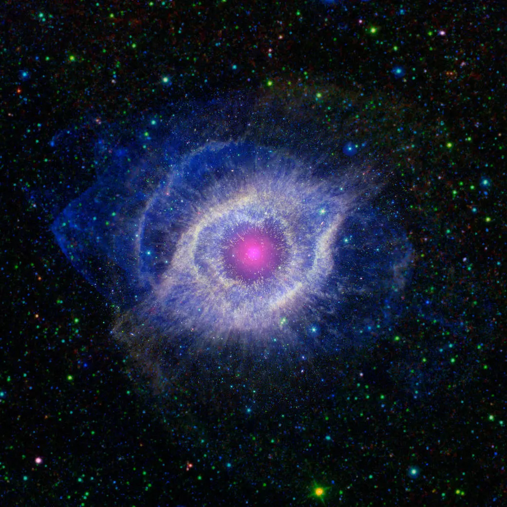
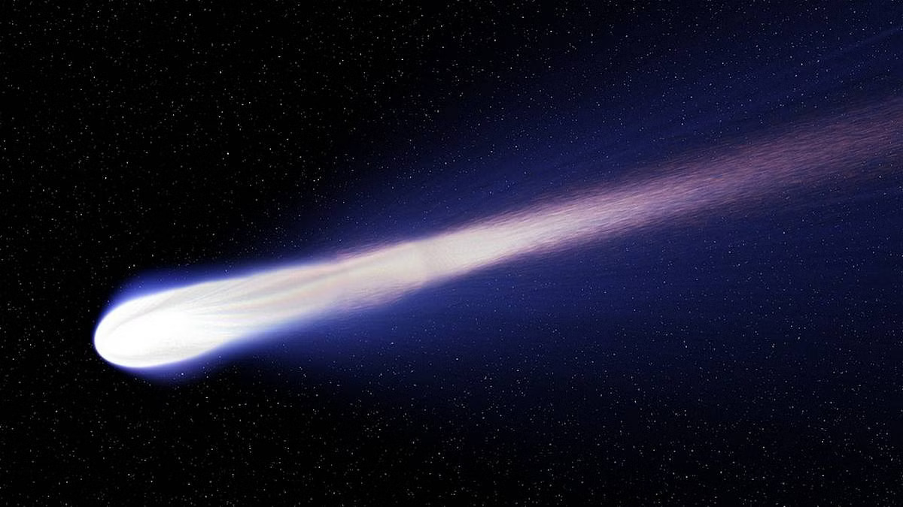
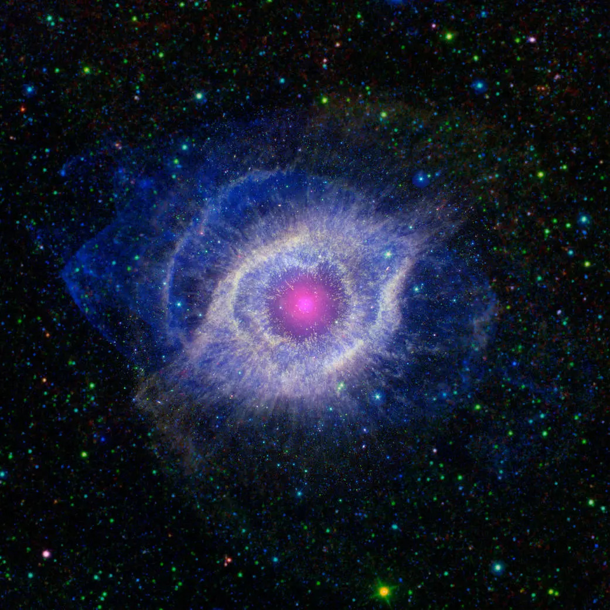
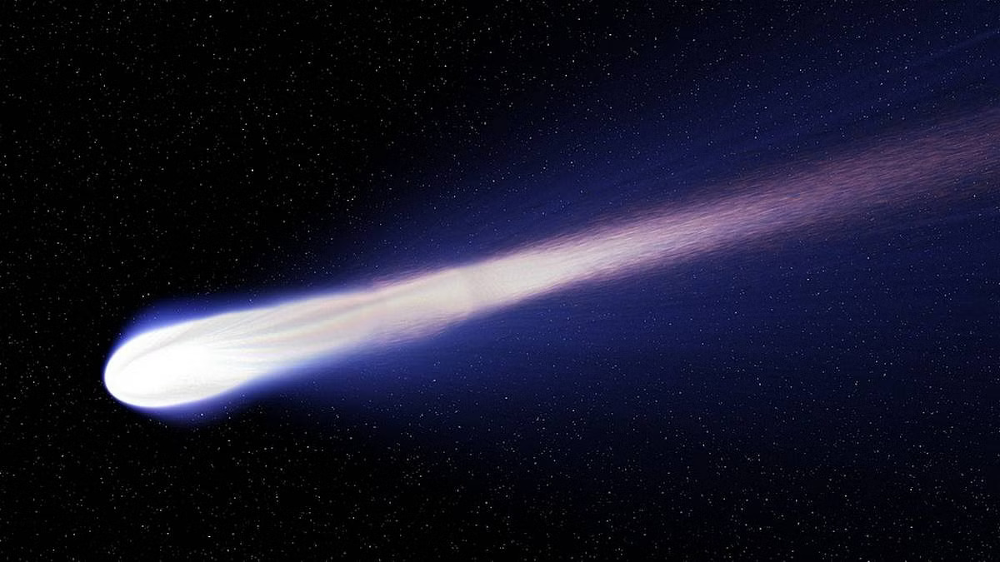

Explore the Universe
 



The Great Filter is a hypothetical concept that suggests there is a significant barrier or series of barriers that prevent life from progressing to advanced stages, such as interstellar colonization. This concept is often used to explain the Fermi Paradox, which questions why we haven't found evidence of extraterrestrial civilizations despite the vastness of the universe.
There are various theories about what the Great Filter could be, ranging from the difficulty of abiogenesis (the origin of life) to the potential self-destruction of advanced civilizations through technological or environmental means.